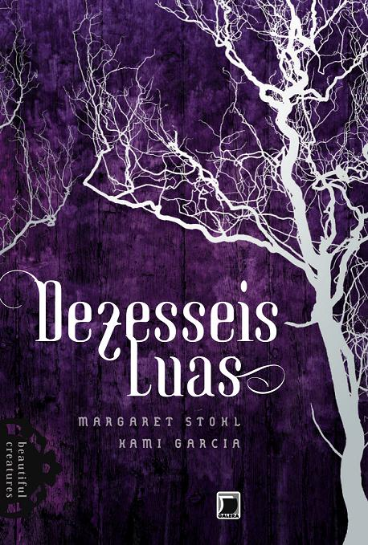
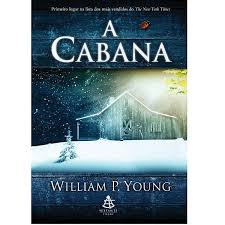
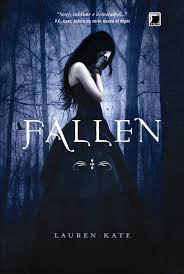
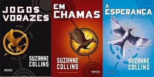

Peré Bonopé 




Livro Mais Vendido
Dezessete Luas
Título: Dezessete LuasTítulo Original: Beautiful Darkness
Série: Dezesseis Luas
1- Dezesseis Luas (2011)
2- Desessete Luas
3- Dezoito Luas (2013)
4- Beautiful Redemption (2012 US)
Autor: Kami Garcia e Margaret Stohl
Editora: Galera Record
Páginas: 462
Ano: 2012
Atenção! Esta resenha contém spoilers de Dezesseis Luas! Sinopse: Juntos, Ethan e Lena podem enfrentar qualquer ataque de Gatlin. Ao menos era assim que funcionava antes de Lena sofrer uma perda trágica e começar a se afastar e gaurdar segredos que estão testando o relacionamento. E agora que Ethan abriu os olhos para o lado negro de Gatlin, não há como voltar atrás. Assombrado por estranhas visões que somente ele consegue ver, Ethan vai sendo puxado cada vez mais para dentro da história confusa de sua cidade.